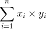

On veut écrire la fonction produit_scalaire() qui retourne le produit scalaire de deux vecteurs.
Pour ceci on va matérialiser les deux vecteurs en entrée par deux séquences (listes ou tuple) que l'on suppose de même taille.
On rappelle que le produit de X et Y vaut :

Par convention, on pose que le produit scalaire de deux listes vides vaut 0.
Voici quelques exemples d'exécution de la fonction (dans la console).
Il faut donc ecrire votre fonction dans un fichier.
L'enregistrer sous la forme prenom_nom_tpProg.py et l'envoyer par courriel.